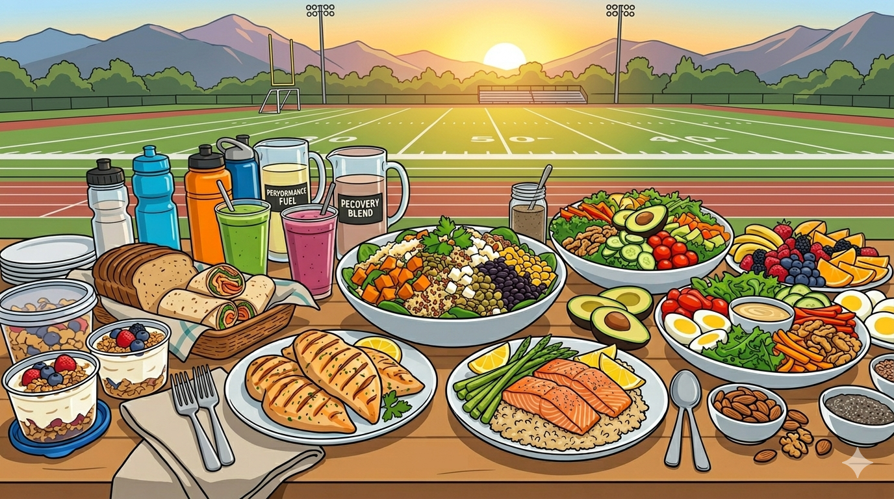

Think of nutrition as the high-grade fuel that keeps your calisthenics sessions from stalling out. Since your body relies on stored carbohydrates (glycogen) for high-intensity power, staying fueled prevents that mid-workout "crash" where even basic reps start to feel impossible. By timing your carbs right, you lower your perceived effort and keep your energy sharp, ensuring you have the physical overhead needed to actually master tough new skills instead of just fighting through fatigue
🥑 Minerals to include in your meals and why
- Magnesium – recovery
- Zinc – immunity
- Iron – energy
- Calcium – bones
- Potassium – cramps
- Vitamin D – strength
🍽️ recipe recommendations
Overnight oats · protein smoothie · quinoa bowl · salmon & greens